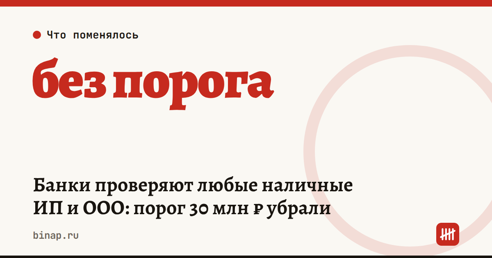

Банки проверяют любые наличные ИП и ООО: порог 30 млн ₽ убрали

26 октября 2026 года Банк России опубликовал новые методические рекомендации о проверке источника наличных: для ИП и юрлиц порог 30 млн ₽ в месяц из майской редакции убран, и банки должны смотреть на операции с наличными независимо от суммы. Для физлиц остался критерий 5 млн ₽ разово или за месяц.
Коротко
- Новые рекомендации ЦБ опубликованы 26.10.2026, майская редакция перестала действовать («Коммерсантъ»).
- Для ИП и юрлиц порог 30 млн ₽ в месяц отменён — проверять операции с наличными банки должны независимо от суммы.
- Для физлиц — 5 млн ₽ разово или за месяц.
- Банк должен до операции получить документы о финансовом положении и источнике средств «в объёме, сопоставимом с суммой операции».
- Номер документа и дата вступления в силу в источниках не указаны.
Сроки, изменения и разборы для ИП и самозанятых — каждое утро в Telegram и MAX. Подпишитесь, чтобы не пропустить.
Что это значит
«Безопасной суммы» больше нет. Раньше ориентиром были 30 млн ₽ в месяц, теперь вопросы банка возможны и при небольших суммах. Это не значит, что каждую операцию заблокируют: рекомендации адресованы банкам, а круг затронутых клиентов ЦБ называет узким (по данным «Клерка»).
Банк может попросить документы заранее. Подтверждением служат кассовые документы, договоры, чеки, накладные, выписки по эквайрингу.
Операции должны вписываться в ваш бизнес. Если у ИП на услугах вдруг появляется крупное снятие наличных «на закупки», вопросы вероятнее.
Что сделать сейчас
- Разложите наличные по источникам. Для выручки — кассовые отчёты и чеки, для внесения собственных денег — договор займа или иной документ.
- Заведите папку по крупным операциям: договор, закрывающие документы, платёжка или расписка.
- Предупреждайте банк. Планируете крупное снятие или внесение — сообщите менеджеру и уточните, какие документы нужны.
- Сократите долю наличных. Эквайринг и СБП оставляют в банке готовую историю поступлений — как выбрать тариф, в статье эквайринг для ИП.
- Держите запасной счёт и план на случай блокировки — банк заблокировал счёт по 115-ФЗ. Как выбрать банк по своим оборотам — в статье где открыть счёт ИП.
Частые вопросы
Это закон, который ИП должен исполнять? Нет, это методические рекомендации для банков. Но банки ориентируются на них при проверке клиентов, поэтому документы стоит держать под рукой.
Что будет, если банк не поверит источнику наличных? В источниках последствия для клиентов не расписаны. Банк вправе запросить пояснения; что делать при ограничениях — в статье про 115-ФЗ.
Нужно ли что-то подавать в банк уже сейчас? Такой обязанности в источниках нет, дата вступления в силу не названа.